Chapter 5 — The Front Door
The report landed in the Stonethrow queue on a Tuesday morning, and Marisol escalated it before her coffee went cold. Reporter: @sable — the number-one name on Glasshouse's own leaderboard, the researcher whose real identity was a running office bet. Severity: Medium, information disclosure. Title: Your front door leaks your floor plan.
Lena read it aloud at triage, every word, because she wanted the room to hear the prose. It was clinically polite. The reproduction steps were better than the team's own runbooks — numbered, deterministic, with expected-versus-actual for each request. Step three was the one that made the room go still:
POST /api/reports HTTP/1.1
Host: glasshouse.io
Content-Type: application/json
{"programId": 4112, "title": null, "body": "x", "severity": "HIGH"}
HTTP/1.1 500 Internal Server Error
Content-Type: application/json
{
"timestamp": "2026-03-24T09:41:17.882+00:00",
"status": 500,
"error": "Internal Server Error",
"trace": "org.springframework.dao.DataIntegrityViolationException: ...
at org.hibernate.engine.jdbc.spi.SqlExceptionHelper.logExceptions...
... HikariPool-1 ... jdbc:postgresql://atrium-prod-db:5432/atrium ...",
"path": "/api/reports"
}
A null title. That was all it took. Atrium answered with a full stack trace: Hibernate class names, the failing SQL, and — riding along in a wrapped cause's message — a fragment of the production JDBC URL. Malformed JSON got a 400 with the same trace field. An invalid severity enum, likewise. Every failure shape on the public API was a guided tour of the internals.
The report closed with a single lowercase signature: — s.
"Our best customer," Lena said quietly, "just told us our porch light shines straight onto the safe." She looked around the table. "We sell trust to security researchers. This is the one bug we don't get to have."
Elias slid the printout across the table to Maya. "It's yours."
She took it with both hands and felt January arrive again: comment #1 beside a line that worked — works is not done. Same lesson, new postmark; this time the green ink had come from outside the building.
⏸ Your call. Before Maya opens a single file, commit: who — or what — assembled that error JSON, what let a null title reach Postgres, and which -ility just failed in front of the platform's best researcher?
The investigation
Reproducing it took ninety seconds. Understanding it took the afternoon, and the understanding was worse than the bug.
First question: who wrote that error body? No code in Atrium built that JSON. The DataIntegrityViolationException left the repository uncaught, so the servlet container performed an error dispatch to Boot's /error endpoint, where an auto-configured BasicErrorController assembled a response from DefaultErrorAttributes. The answer was nobody — and that was the problem. The stack trace was in it because of three lines of YAML:
# application.yml — git blame: 2019, "temporary, debugging the CSV importer"
server:
error:
include-stacktrace: always
include-message: always
Temporary. The default for include-stacktrace was never; someone had opted into the leak, once, for a CSV importer that no longer existed. She read ErrorMvcAutoConfiguration until she knew exactly which bean built which field — the new reflex, kicking in without her noticing: read the machinery until it stops being magic. The commit was old enough to start school.
Second question: why was a null title reaching the database at all? She opened the submission controller and found 2019 staring back:
@RestController
public class ReportSubmissionController {
@Autowired
private ReportRepository reports; // 2019 vintage
@PostMapping("/api/reports")
public Report submit(@RequestBody Report report) { // the JPA entity, raw off the wire
return reports.save(report); // no @Valid — the database is the validator now
}
}
The JPA entity was bound straight from the wire and saved with nothing checking it in between; the only validation was whatever constraint the database happened to enforce. That meant the error messages were written by Postgres and Hibernate, for an audience of attackers.
It was comment #1 run in reverse, she realized. In January, an entity had leaked out through Jackson after the session closed — contract coupled to schema on the way to the wire. Here, one came in off the wire before anything checked it: the same unguarded boundary, crossed in the opposite direction.
At Meridian I parsed request JSON by hand, and the null check lived in the same ten lines as the parsing — bound and checked were one motion, she thought. My instinct says a framework that binds the object has surely checked it too. In Spring MVC, binding and validation are separate steps, and the second is opt-in: no @Valid on the parameter means no validation, no exception, no 400. Her instinct was the trap — the framework had been doing exactly what the code asked, which was nothing.
(If you called it at the pause: both answers are nobody — and the -ility isn't only security; it's contract integrity. Elias gets there.)
Third: the wider she looked, the worse it got. Three other public controllers had hand-rolled try/catch blocks returning three different error shapes — one {"error": ...}, one {"message": ...}, one a bare string. And when she replayed Sable's request with Accept: text/html, the same failure came back as the Whitelabel error page. The error path chose an HTML view or a JSON body depending on the header. It had content-negotiated its own leak. The API layer wasn't designed. It was sedimentary.
What the senior sees
"Before you fix the door," Elias said, uncapping a marker at the Wall, "learn the house." He drew a socket on the far left and a database cylinder on the far right, then handed her the marker. "One request. Socket to DB and back. You talk, I interrupt."
"A request hits the pod. Tomcat's connector accepts the connection and a worker thread picks it up."
"Then?"
"The filter chain. Servlet filters, before any Spring MVC exists." She drew boxes. "Then the DispatcherServlet."
"Which is what?"
"A servlet. Just a servlet, registered at /, sitting inside Tomcat like any other." She heard how the sentence demystified itself as she said it. "The entire framework happens inside one servlet's service() method. Front controller pattern — one entry point that dispatches to everything else."
So the DispatcherServlet is Meridian's biggest hand-rolled servlet, finished — the routing table, the JSON parsing, the dispatch switch, the response writing, everything that servlet grew inside one service() method, redone as pluggable strategies, she thought, and for once the hand-wired years were a head start instead of a trap.
"Who calls your controller method?" Elias asked. "Name it."
"The DispatcherServlet—"
"Too coarse. Name the hop."
She worked it out at the board, source open on her laptop. The HandlerMapping — concretely, RequestMappingHandlerMapping — matched path and method. It returned a HandlerExecutionChain: not just the handler but the HandlerInterceptors wrapped around it. Atrium's own ApiTimingInterceptor ran there — preHandle before the handler, afterCompletion on the way out even when things failed, postHandle only on success. Then the HandlerAdapter invoked the method. It was the one that knew how to build the arguments.
"What turns Sable's JSON into your object, and where does it live?"
"An argument resolver. RequestResponseBodyMethodProcessor sees @RequestBody, asks the registered HttpMessageConverters who can read application/json, and Jackson's converter deserializes it." She tapped the spot. "And if the parameter is annotated @Valid, Bean Validation runs right here, after binding, before the controller is ever entered. Failure throws MethodArgumentNotValidException — the controller never sees the garbage."
"And the way back?"
"@RestController means @ResponseBody, so the return value skips view resolution and goes back through the converters — chosen by content negotiation against the Accept header." She drew the unused branch anyway: ViewResolver, where a ModelAndView would have gone looking for a JSP — server-rendered HTML, the older model. Atrium hadn't rendered a view since 2021; the SPA drew the screens, the API served the data, and the JSP branch on the diagram got labeled the road not taken. "Then interceptors unwind, filters unwind, response flushes."
She stepped back. The drawing ran the full width of the Wall, socket to cylinder, beneath February's smoke-cloud proxy (the @Transactional wrapper a this. call walks straight past, dispatching on the raw object inside) and March's precedence ladder (property sources outranking one another in fixed order, command line down to packaged defaults):

(The compact version, born that afternoon; the full render lives in Appendix E.)
Looking at it, she understood why Elias had cancelled an afternoon for this, as he had in March. Back then, the ConditionEvaluationReport had made bean absence interrogable — every auto-configuration candidate listed, every vetoing condition named. This drawing gave a request the same property. Systems you can ask, instead of systems you must believe.
Elias studied the wall. "Now the question that matters. Where would you catch an exception thrown by a filter?"
"@RestControllerAdvice," she said. "Global exception handling, catches everyth—"
He waited, which with Elias meant no.
A try/catch at the outermost frame catches everything beneath it — at Meridian, the hand-rolled logging filter had been that frame. She'd assumed the advice sat where her old catch-all had. Her own diagram said otherwise: the advice wasn't a layer in front of anything — it was consulted by ExceptionHandlerExceptionResolver inside the DispatcherServlet's dispatch loop. A filter that threw did so before the servlet ran for that request, so the exception fell to the container, which error-dispatched it to /error, straight into the auto-configured controller with the loose YAML. The hand-wired reflex was the trap — and that path was the actual anatomy of Sable's 500.
"Advice lives inside the servlet's world," she said slowly. "Filters live in front of it. My advice can never see a filter's exception. They're different jurisdictions."
Elias drew three brackets under the diagram. "Filter: sees the raw ServletRequest and ServletResponse, doesn't know what a handler is, can wrap or short-circuit everything. Interceptor: inside the servlet, knows which handler was chosen, brackets the invocation. Advice: narrowest scope, richest context — the exception phase of dispatch only. People file this choice under style," he added. "It isn't. It's jurisdiction — a layering decision about which layer is allowed to know what. A filter that imports your domain types has annexed territory it can't defend. Draw the borders on purpose, and every cross-cutting concern has exactly one legal home." Then he tapped the empty whiteboard to the left of the servlet, out past the filters. "Security lives out here, in front of the front door. Remember the geography. One day the worst week of your year will start in this exact spot."
She wrote it down. It would take until July to learn what he meant.
The fix
Maya wrote the rebuild plan as four invariants, because rules outlive patches.
One: DTOs at the boundary. Entities never. This finished the lesson from her first week — comment #1 in green ink, "Works is not done. What happens when this entity meets Jackson after the session closes?" Records, immutable, with Jakarta Bean Validation doing the gatekeeping declaratively:
public record SubmitReportRequest(
@NotNull Long programId,
@NotBlank @Size(max = 200) String title,
@NotBlank String body,
@NotNull Severity severity) {}
@RestController
@RequestMapping("/api/{version}/reports")
class ReportSubmissionController {
private final ReportSubmissionService service;
ReportSubmissionController(ReportSubmissionService service) {
this.service = service;
}
@PostMapping(version = "2")
ResponseEntity<ReportCreatedResponse> submit(
@Valid @RequestBody SubmitReportRequest request) {
ReportCreatedResponse created = service.submit(request);
return ResponseEntity
.created(URI.create("/api/v2/reports/" + created.id()))
.body(created);
}
}
That version = "2" was Framework 7's new native versioning. The attribute names a version but never says where one lives in a request, and the framework will not guess: start the app with no strategy registered and the context fails fast, with API version specified, but no ApiVersionStrategy configured. On its own the annotation is half a sentence; one registration completes it, and Maya put hers where the next person would go looking for the policy:
@Configuration
class ApiVersionConfig implements WebMvcConfigurer {
@Override
public void configureApiVersioning(ApiVersionConfigurer versioning) {
versioning.usePathSegment(1) // /api/v2/reports → version "2"
.addSupportedVersions("1", "2")
.setVersionRequired(true); // unversioned → designed 400, not drift
}
}
setVersionRequired(true) was ADR-005's "explicit defaults" clause made executable: a request with no version earned a designed error, not whatever shape the oldest mapping happened to have.
A correct submission now returned what the HTTP spec had always asked for: 201 Created with a Location header pointing at the new resource — the contract, not a habit. The detail endpoint alongside it took its id as a @PathVariable and an includeActivity flag as a @RequestParam, each bound by its own resolver; only @RequestBody ever touched Jackson.
Two: one error shape for the whole API. A single @RestControllerAdvice producing RFC 7807 ProblemDetail — a standard error format that has been first-class in Spring since Framework 6, machine-readable type URIs and all:
@RestControllerAdvice
class ApiProblemHandler {
private static final Logger log = LoggerFactory.getLogger(ApiProblemHandler.class);
@ExceptionHandler(MethodArgumentNotValidException.class)
ProblemDetail invalid(MethodArgumentNotValidException ex) {
var pd = ProblemDetail.forStatusAndDetail(
HttpStatus.BAD_REQUEST, "Request validation failed.");
pd.setType(URI.create("https://glasshouse.io/problems/validation"));
pd.setProperty("errors", ex.getFieldErrors().stream()
.map(f -> Map.of("field", f.getField(), "reason", f.getDefaultMessage()))
.toList());
return pd;
}
@ExceptionHandler(Exception.class) // last resort: log everything, tell nothing
ProblemDetail fallback(Exception ex, HttpServletRequest request) {
log.error("Unhandled exception at {}", request.getRequestURI(), ex);
return ProblemDetail.forStatusAndDetail(
HttpStatus.INTERNAL_SERVER_ERROR, "An unexpected error occurred.");
}
}
MethodArgumentNotValidException became a structured 400 listing each failing field and its reason — the client's own data, nothing internal. HttpMessageNotReadableException — Sable's broken-JSON case — got its own designed 400. And the 2019 override came out of application.yml entirely, returning include-stacktrace to its default never. Even the container's error dispatch — the one path her advice could never reach — now had nothing left to leak.
Three: versioning as a first-class citizen. As of Boot 4 — Spring Framework 7 underneath — API versioning is native to the web framework: a version attribute on the mapping annotations, with the resolution strategy (path segment, header, or query parameter) registered once in a WebMvcConfigurer — the ApiVersionConfig above. Atrium chose the path segment; public routes moved to /api/v2/**, the v1 shapes were frozen and marked deprecated, and RequestMappingHandlerMapping now matched on version the same way it matched on path and method. No more hand-rolled if (version.equals(...)) archaeology.
Four: one Jackson, configured once. A single builder-customizer bean — Boot's hook for shaping the auto-configured mapper — set non-null inclusion and ISO-8601 timestamps in one documented place, replacing the per-controller ObjectMappers scattered through the codebase. Content negotiation stayed, but every negotiable representation now came from the same, deliberate configuration. A MockMvc test pinned each failure shape so the contract couldn't drift back.
The contract, governed
The invariants were done by Wednesday evening when Lena appeared with the bounty sheet. "Triage scored it Medium. Sanity-check me — my gut says we got off cheap."
"Your gut's right," Maya said. "Medium scores the data; it's the wrong score for what it proved. A stack trace in an error body isn't cosmetic — it's a contract violation. The error surface is part of the API; Sable consumed a response we never designed, which means we'd spent seven years publishing a contract nobody wrote."
Elias, passing with coffee, stopped. "Say the -ilities."
"Interoperability — one error grammar instead of four accidents. Evolvability — a version policy, so the contract can change without breaking whoever built against it. And security, because every undesigned response is attack surface. An API is a governed product surface: who may change what, with what notice. Deprecation should be a process with dates, not an outage with apologies."
"Then write the governance down," Elias said, "or you've described a mood."
ADR-005 — API contract governance. Context: A malformed request leaked a stack trace — Hibernate internals and a production JDBC URL fragment — to an external researcher, because Atrium's error responses were accidental: per-endpoint folklore in three shapes, plus Boot's
/errorrunning under a 2019 debug flag. Decision: RFC 7807/9457ProblemDetailis the only error shape on the public API; all responses are records, never entities (per ADR-001); validation happens at the binding layer via@Valid; the versioning policy is deliberate — Boot 4 native versioning, path-segment resolution, explicit defaults, and a published sunset process for deprecated versions. Consequences: Every error is now a designed response and every contract change a governed one; the version policy taxes each new endpoint with a decision it never used to owe, but it makes deprecation a process instead of an outage.
⚖ Your move, architect
Invariant three was the contested clause — the design review ran forty minutes over, because everyone had a versioning religion. Note what the fight was not about: Boot 4 makes any strategy a one-line registration, and ADR-005 demanded a sunset policy whichever way the room voted. The forty minutes were spent on the resolution mechanism itself — where, physically, does the version live in a request integrators script against? Commit before reading on.
- A — Path segment.
/api/v2/**: every log line, curl reproduction, and cache key agrees on what was called. - B — Header / media-type. Canonical URLs forever; the version travels invisibly in
Acceptor a custom header. - C — Query parameter.
?version=2: the cheapest thing an integrator can flip; ugly in caches and bookmarks.
The trade-offs, since you've committed: A — Atrium's choice — buys debuggability and cache-friendliness (every log line, cache key, and support ticket agrees on what was called) and pays in URL proliferation: the version infects every link and tempts teams into copying whole route trees. B buys clean, stable URLs and pays in invisibility: curl reproductions omit the header and caches can't vary without Vary discipline — harder debugging by design. C buys the gentlest migration — integrators change one parameter, not their URL structure — and pays at the cache and at the contract: query strings fragment cache keys, leak into referrer logs and bookmarks, and make the version read like an option instead of a promise. None of the three rides free, which is the point: any scheme applied uniformly beats per-team improvisation, and the failure mode was never the wrong mechanism — it was having four.
And the mechanism is the small decision; pick wrong and you pay for a migration. The decision underneath is the public contract: the ProblemDetail shape and the URL grammar integrators build against. That one is a one-way door. Once Sable's scanners parse your error bodies and Northbeam's scripts hard-code your routes, every "we'll firm it up later" becomes a breaking change you inflict on people who did nothing wrong. Shipping loose to "keep the contract flexible" means deciding later under worse information — live integrators, frozen mistakes — and paying twice: once to build loose, once to break everyone. Hence ADR-005's consequences clause: deprecation is a process with dates, because nothing else reopens the door. This is a one-way door — commit deliberately, version from day one, and spend the review effort before first publish, when forty minutes in a room is the cheapest the decision will ever be.
The retest request went out Thursday. Sable's reply was one line: Better. — s.
On Friday, Maya walked the full team through the Wall — socket to DB and back, every component named, every jurisdiction marked. The Request Journey diagram stayed up; the sun-bleached DO NOT ERASE note acquired a neighbor. The ADR binder took its fifth entry, and Marisol taped Sable's report beside the diagram — the outside world, permanently auditing the drawing. Elias decreed, in the tone he used for things that were already true, that every future hire would trace it in their first week.
"You'll be giving the tour," he added to Maya, and then, almost to himself: "I won't be the one giving this tour forever."
She didn't catch the weight of it. Lena was already talking about how marketing wanted the newly presentable platform front and center for a spring campaign, and that felt like good news.
The debrief — Ch.5, The Front Door
Trace an HTTP request from the socket to the DB and back. Claim — Spring MVC is a front-controller pipeline: one servlet, the
DispatcherServlet, dispatches every request through pluggable strategies. Mechanism — Tomcat's connector accepts the socket and assigns a worker thread → the servlet filter chain runs (security lives here, before Spring MVC exists) →DispatcherServlet→HandlerMappingselects the handler plus its interceptor chain →preHandle→HandlerAdapterinvokes the method via argument resolvers (@RequestBodythrough Jackson'sHttpMessageConverter, then@Validvia Bean Validation —MethodArgumentNotValidExceptionfires before the controller runs) → controller → service (where the@Transactionalproxy wraps) → repository proxy →EntityManagerand persistence context → a HikariCP connection → the database; the return value goes back through a converter chosen by content negotiation,postHandle/afterCompletionfire, filters unwind, the response flushes. Trade-off — the uniform pipeline centralizes cross-cutting concerns (advice, converters, versioning) cheaply, but each layer sees only its own jurisdiction. Failure mode — exceptions thrown in front of the servlet never reach@ControllerAdvice; they fall to the container's error dispatch, and a permissive/errorconfiguration will happily publish your stack traces — which is exactly how a security platform leaked its floor plan.
THE ARCHITECT'S LENS
- -ilities at stake: Contract integrity — interoperability (one error grammar every integrator can parse) and evolvability (one deliberate version policy) — plus security of the error surface: every response shape you didn't design is attack surface you don't control.
- The ADR: ADR-005 — API contract governance:
ProblemDetailas the only error shape, records at the boundary (per ADR-001), validation at the binding layer, versioning with explicit defaults and a published sunset process. - Rejected alternatives: per-endpoint
try/catchfolklore (the sedimentary API, three error shapes and counting); leaving validation to the database (Postgres writing client-facing error messages for an audience of attackers); ungoverned header/media-type versioning (clean URLs bought with invisibility); and no version policy at all — not a smaller decision, just an unrecorded one. - Fight or lean: Lean on the framework's contract machinery —
ProblemDetail,@Valid, advice, native versioning are first-class; hand-rolling them is fighting for no prize. Fight your own overridden defaults —include-stacktrace: alwayswas the team opting out of safety and forgetting the sale — and never fight the geography: harden/errorrather than pretending advice can reach a filter's exception.
Story anchors
- Sable's 500 with the JDBC URL in it → unhandled exceptions falling through to Boot's
/errorwithinclude-stacktrace: always; honestProblemDetailfrom a@RestControllerAdviceis the cure. - "Who calls your controller method? Name it." → the DispatcherServlet pipeline: HandlerMapping → interceptors → HandlerAdapter → argument resolvers → converters.
- Maya reaching for advice to catch a filter's exception → jurisdictions: Filter (in front of the servlet, raw streams), HandlerInterceptor (inside, knows the handler), advice (exception phase of dispatch only).
- Lena's bounty sheet — "Medium is the wrong score for what it proved" → the error surface is security architecture: information disclosure is a contract violation, not a cosmetic bug — hence ADR-005, every error a designed response.
Interview ammo
- Kill-shot #4: Trace an HTTP request from the socket to the DB and back, naming every component. — The four-beat answer above; the differentiator is naming the hops (
RequestMappingHandlerMapping,HandlerAdapter, argument resolvers,HttpMessageConverter) and knowing what wraps where. - Follow-up: Where do you catch an exception thrown by a filter, and why not
@ControllerAdvice? — Advice is invoked byExceptionHandlerExceptionResolverinside the DispatcherServlet's dispatch; a filter throws before the servlet runs, so you handle it in the filter layer itself (or accept the container's error dispatch to a hardened/error). - Follow-up: What exactly builds your
@RequestBodyargument, and what fires when validation fails? — TheRequestResponseBodyMethodProcessorargument resolver delegates to the JacksonHttpMessageConverterselected by content type, then runs Bean Validation for@Valid; failure throwsMethodArgumentNotValidExceptionbefore the controller method is entered. - Architect follow-up — How do you version a public API without breaking integrators, and how much does the mechanism matter? — Less than the policy: pick one resolution strategy (Boot 4's
versionattribute makes path, header, or query first-class), publish explicit defaults and a dated sunset process, and pin it in tests — integrators can plan around a process, not around surprises.
Pointers → Playbook Ch.10 · examples/ch10_mvc/